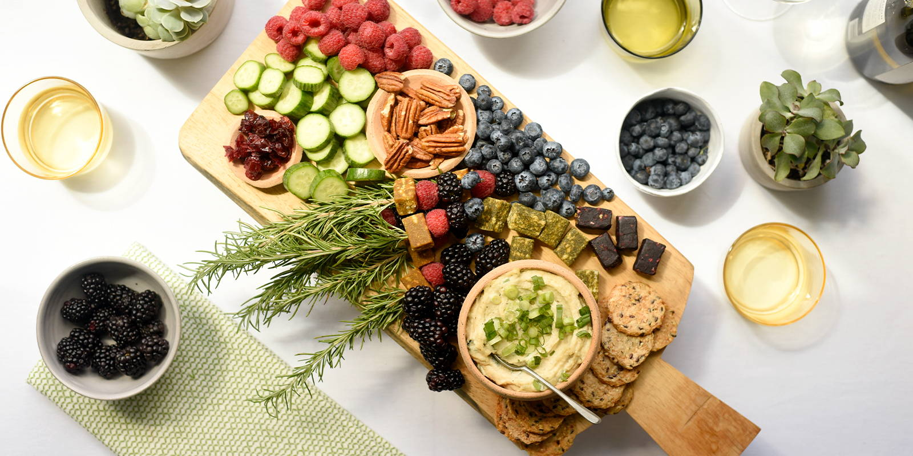
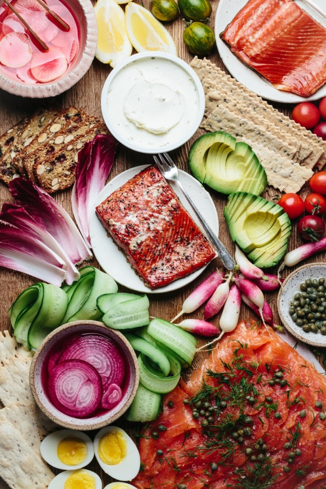

Favorite Food

I used to be a picky eater until I moved into the city and had a chance to try a variety of international foods. I was a vegan for about 4 years and on/off vegetarian for over a decade, but now consider myself an omnivore. Although I still prefer fruits, vegetables, crackers, and other snacks. Basically anything bite-sized that I can eat consistenly throughout the day. I'm also always drinking tea or coffee--frequently at the same time (for maximum Caffeine consumption).
Visit the link below to see the recipie for the vegan grazing board above!

My cooking usually involves a filet of fish with fresh vegetables. Recently I've been baking protein rich fish, like salmon, with a side like broccoli or bok choy. This makes the perfect dinner especially when combined over rice. During the daytime I have school and work, so I grab a poké bowl on-the-go. Although, I do take time to sit and enjoy my meal because the fish tastes best when its fresh...
Check out the link below to see how celebrity chef Gordon Ramsey cooks the perfect salmon filet: